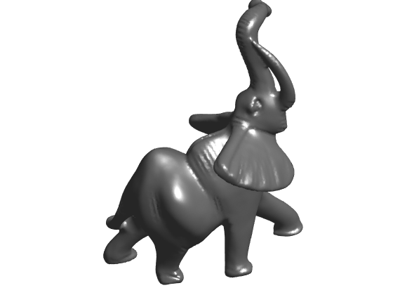
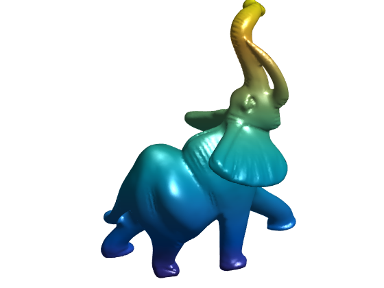
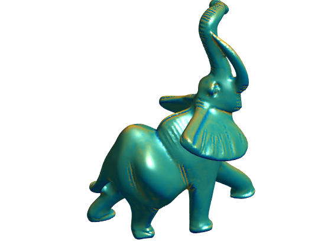
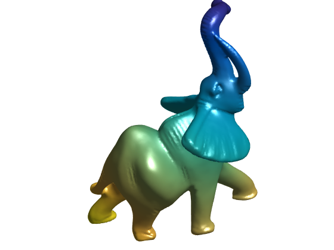
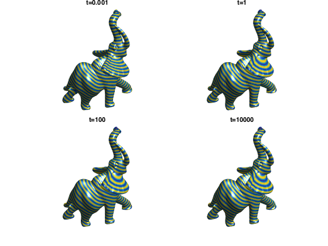
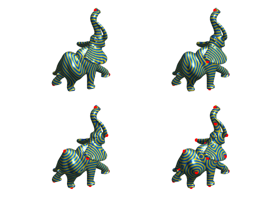

Geodesic Distance with Poisson Equation
This tour explores the method detailed in the paper [CraneWeischedelWardetzky13] to compute geodesic distance by simply solving a Poisson equation.
Contents
Installing toolboxes and setting up the path.
You need to download the following files: signal toolbox, general toolbox and graph toolbox.
You need to unzip these toolboxes in your working directory, so that you have toolbox_signal, toolbox_general and toolbox_graph in your directory.
For Scilab user: you must replace the Matlab comment '%' by its Scilab counterpart '//'.
Recommandation: You should create a text file named for instance numericaltour.sce (in Scilab) or numericaltour.m (in Matlab) to write all the Scilab/Matlab command you want to execute. Then, simply run exec('numericaltour.sce'); (in Scilab) or numericaltour; (in Matlab) to run the commands.
Execute this line only if you are using Matlab.
getd = @(p)path(p,path); % scilab users must *not* execute this
Then you can add the toolboxes to the path.
getd('toolbox_signal/'); getd('toolbox_general/'); getd('toolbox_graph/');
Warning: Name is nonexistent or not a directory: toolbox_signal Warning: Name is nonexistent or not a directory: toolbox_general Warning: Name is nonexistent or not a directory: toolbox_graph
Gradient, Divergence and Laplacian on Surfaces
The topology of a triangulation is defined via a set of indexes \(\Vv = \{1,\ldots,n\}\) that indexes the \(n\) vertices, a set of edges \(\Ee \subset \Vv \times \Vv\) and a set of \(m\) faces \(\Ff \subset \Vv \times \Vv \times \Vv\).
We load a mesh. The set of faces \(\Ff\) is stored in a matrix \(F \in \{1,\ldots,n\}^{3 \times m}\). The positions \(x_i \in \RR^3\), for \(i \in V\), of the \(n\) vertices are stored in a matrix \(X_0 = (x_{0,i})_{i=1}^n \in \RR^{3 \times n}\).
clear options; name = 'elephant-50kv'; options.name = name; % useful for displaying [X,F] = read_mesh(name);
Number \(n\) of vertices and number \(m\) of faces.
n = size(X,2); m = size(F,2);
Display the mesh in 3-D.
options.lighting = 1;
clf;
plot_mesh(X,F,options);
axis('tight');
 In this tour, we use piecewise linear finite element to compute the gradient operators, which in turns allows us to compute the divergence (its transposed operator) and the Laplacian (as the composition of the divergence and the gradient).
The gradient operator \(\nabla\) can be understood as a collection of 3 sparse matrices \((\nabla_s)_{s=1,2,3}\) of size \((m,n)\) that computes each coordinate of \(\nabla u=(\nabla_s u)_{s=1,2,3}\) through the formula, for each face \(f\), \[ (\nabla u)_f = \frac{1}{2A_f} \sum_{i \in f} u_i (N_f \wedge e_i) \] where \(A_f\) is the area of face \(f\), \(N_f\) is the normal to the face, \(e_i\) is the edge opposite to vertex \(i\), and \(\wedge\) is the cross product in \(\RR^3\).
Callback to get the coordinates of all the vertex of index \(i=1,2,3\) in all faces.
XF = @(i)X(:,F(i,:));
Compute un-normalized normal through the formula \(e_1 \wedge e_2 \) where \(e_i\) are the edges.
Na = cross( XF(2)-XF(1), XF(3)-XF(1) );
Compute the area of each face as half the norm of the cross product.
A = sqrt( sum( Na.^2 ) )/2;
Compute the set of unit-norm normals to each face.
N = Na ./ repmat(2*A, [3 1]);
Populate the sparse entries of the matrices for the operator implementing \( \sum_{i \in f} u_i (N_f \wedge e_i) \).
I = []; J = []; V = []; % indexes to build the sparse matrices for i=1:3 % opposite edge e_i indexes s = mod(i,3)+1; t = mod(i+1,3)+1; % vector N_f^e_i wi = cross(XF(t)-XF(s),N); % update the index listing I = [I, 1:m]; J = [J, F(i,:)]; V = [V, wi]; end
Sparse matrix with entries \(1/(2A_f)\).
dA = spdiags(1./(2*A(:)),0,m,m);
Compute each \(\nabla_s\) matrix.
G = {};
for k=1:3
G{k} = dA*sparse(I,J,V(k,:),m,n);
end
Grad and div operators.
Grad = @(u)[G{1}*u, G{2}*u, G{3}*u]';
Div = @(q)G{1}'*q(1,:)' + G{2}'*q(2,:)' + G{3}'*q(3,:)';
Laplacian matrix
Delta = G{1}'*G{1} + G{2}'*G{2} + G{3}'*G{3};
Display a function \(f\) on the mesh.
f = X(2,:); options.face_vertex_color = f(:); clf; plot_mesh(X,F,options); axis('tight'); colormap parula(256);
Display its Laplacian.
g = clamp(Delta*f(:), -50, 50); options.face_vertex_color = rescale(g); clf; plot_mesh(X,F,options); axis('tight'); colormap parula(256);
Heat Diffusion and Time Stepping
The method developped in [CraneWeischedelWardetzky13] relies on the fact that the level set of the geodesic distance function to a starting point \(i\) agrees with the level set of the solution of the heat diffusion when the time of diffusion tends to zero. This fundamental result is proved in [Varadhan67].
In fact, the same result holds true when replacing the heat diffusion solution by a single Euler implicit step in time, with time step \(t\). This means one should consider the solution \(u\) to the equation \[ (\text{Id}+t \Delta) u = \delta_i \] where \(\delta_i\) is the Dirac vector at vertex index \(i\).
Select index \(i\).
i = 21000;
Set time \(t\).
t = 1000;
Solve the linear system.
delta = zeros(n,1); delta(i) = 1; u = (speye(n)+t*Delta)\delta;
Display this solution.
options.face_vertex_color = u; clf; plot_mesh(X,F,options); axis('tight'); colormap parula(256);

Exercice 1: (check the solution) Solve the heat diffusion equation \[ \frac{\partial g}{\partial t} = -\Delta g \] by performing several implicit time stepping.
exo1;

Geodesic in Heat Method
The main point of the method [CraneWeischedelWardetzky13] is to retrieve an approximation of the distance function \(\phi\) from the level set of implicit heat diffusion step \(u\).
This is achieved by using the fact that \(\norm{\nabla \phi}=1\), i.e. one should have \[ \nabla \phi \approx -\frac{\nabla u}{\norm{\nabla u}}. \] Solving this equation in the least square sense leads to the resolution of a Poisson equation.
Compute the solution \(u\) with explicit time stepping.
t = .1; u = (speye(n)+t*Delta)\delta;
Compute the gradient field.
g = Grad(u);
Normalize it to obtain \[ h = -\frac{\nabla u}{\norm{\nabla u}}. \]
h = -g ./ repmat( sqrt(sum(g.^2)), [3 1] );
Integrate it back by solving \[ \Delta \phi = \text{div}(h). \]
phi = Delta \ Div(h);
Display.
options.face_vertex_color = phi; clf; plot_mesh(X,F,options); axis('tight'); colormap parula(256);
Functions for displaying the level sets of the distance.
p = 30; DispFunc = @(phi)cos(2*pi*p*phi);
Same, but using a different colormap.
options.face_vertex_color = DispFunc(phi); clf; plot_mesh(X,F,options); axis('tight'); colormap parula(256);

Exercice 2: (check the solution) Display the result obtained for several time \(t\).
exo2;
Exercice 3: (check the solution) Compute distances from an increasing number of starting points that are computed using a farthest point sampling.
exo3;
Bibliography
- [CraneWeischedelWardetzky13] K. Crane, C. Weischedel, M. Wardetzky, Geodesics in heat: A new approach to computing distance based on heat flow, ACM Transactions on Graphics , vol. 32, no. 5, pp. 152:1-152:11, 2013.
- [Varadhan67] S.R.S. Varadhan, On the behavior of the fundamental solution of the heat equation with variable coefficients Communications on Pure and Applied Mathematics 20, 2, 431?455, 1967